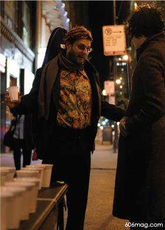
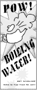

 But you'll always get some takers. A stumbling man in a Hawaiian shirt approaches my stand and reads the first lines of the brochure:
Water has been boiled for thousands of years but its value as a high quality beverage has been grossly underestimated until NOW!
He looks me in the eye.
“Would you like to try a sample?” I ask.
“I've had a lot to drink tonight already,” he says.
“You don't want to get dehydrated.”
He smiles and picks up a cup in both hands as he passes.
Some people are just looking for an excuse to bullshit. They leave their houses looking for a good debate. They know all the tricks. They ask questions. They leave their e-mail addresses with me to continue a dialogue on the topic. They don't need to try a sample. They're just glad I'm sticking it to the man; they just want to see Evian die.
It is absolutely essential to get wrapped up in the rhetoric. I tailor my responses to the types of comments I get. I can play it cool and say this is just a tongue-in-cheek way of getting people to think about where their water comes from, but if you want to get philosophical about corporations, fine.
It's hard to get people to stop for a brochure. The first thing is you have to look excited. You have to look like handing out samples of boiled water is exciting as hell. A self-important pout will not get you half as far. Don't thank people for taking the brochures either. You have to make it look like you're doing them a favor. If you let your guard down, for even a second, they'll see right through you.
“Brochure? Brochure?” I'm extending my arm to both my sides when a man stands beside me, next to the table of samples.
“I don't know, girly, looks more like an art project,” he leans into me conspiringly.
“No sir, this is about water.”
“Are all your projects about water?”
“Naturally.”
Activism has a dialogue of its own, and it's important not to stray from it or you come off looking like an exhibitionist.
If you want to impact commuters you really have to accost them. Never defend your organization. Never start a sentence with “Well …”
A man and his girlfriend stop to read my sign with their fur coats and cigarettes.
 “Free Samples: This water has been boiled!”
“What,” asks the man in the fur, “is this?”
“Well … this is water I am sampling that I've boiled at home,” I interject.
“Clearly,” says the man.
“Clever,” says the woman.
Never restate the obvious. It gives pedestrians a chance to second-guess you.
The process will wrap you up. After an hour of passing these things out, I'm getting bold. I'm taking a few steps along with the people who hope to pass the stand quickly. If someone takes a brochure, they're trying the water too.
“Not bad,” say some of the meeker ones, sipping their sample or nodding their heads cautiously in my direction, looking for a place to ditch the cup.
An hour of activism explains why the word contains “act.” As long as you've got a spectacle, any topic for your movement will do. People don't stop to get informed. They stop to be entertained, to argue. After the evening rush hour, as I collect and stack my Dixie cups and stash the teapot in my handbag, the card table under my arm, I see the requisite number of brochures lying on the curbside on my walk to the car. The brochure is a part of the act. It's the attention grabber, something to thrust. It has no value outside of the exchange, the gesture, the sample compliment. I am walking to my car where there is a bottle of water waiting for me in the glove box. There's no real reason then, to pick the brochures up, to brush off the dirt from the curb and redistribute them, though the impulse is there. return to page 1
|
| ad |
|
| comments: asphalt |
|
subject: great idea
date: 01.31.2004
name: niel
comment:
I take a lot more than a cup of water if I saw that girl on the street. |
| |
subject: sweet story
date: 02.01.2004
name: dehydrated fool
comment:
evian is naive spelled backwards |
| |
subject: pow
date: 02.02.2004
name: guess who
comment:
The pow on page 2 needs to be more transparent |
| |
|